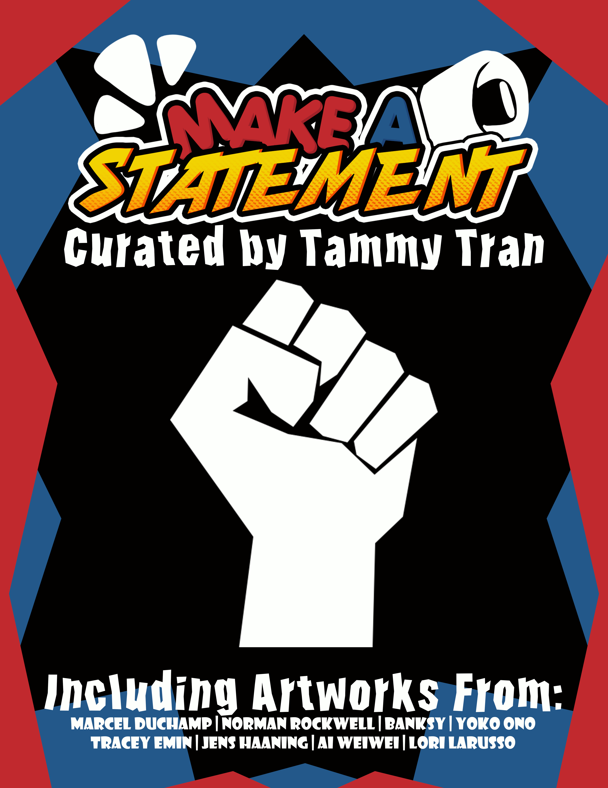

Group Exhibition curated by Tammy Tran

The artistic works contained in the exhibition Make a Statement are all about critiquing the troubles of the real world. Through various mediums of art, a confrontation of what many may be afraid of facing is presented head-on by these artists. Much of the work in this exhibition is rooted with a rich history of how these pieces came to be and what they represent with both the artist’s personal experience and the world around them.
In a world where censorship is even more prevalent in a secretive manner, it is more than valuable to push back against things that the media may persuade the general public to believe and do. Awareness is a very valuable part of knowledge and making sound decisions that are morally right for you. Make a Statement’s art exhibition was created as a place to be aware.
Curated by Tammy Tran, each artist’s work represents a pressing matter of the real world. Either it be with the environment and the harmful impacts of pollution to corruption within the government.
This group exhibit aims to share a piece of what people are doing to call out and stand against injustices in the world that we live in. Appearing scary to many, these artists push back the potential censorship and disapproval of people who wish to silence the ones who want to speak up and give a voice to both themselves and the people who aren't as lucky to have that voice. This exhibition strives to serve as a way to inspire people to speak up as well, as many find themselves choosing to stay silent instead for their own comfort.
Visual works from Norman Rockwell, Banksy, Ai Weiwei, and Lori Larusso express their meaning directly through their art. With their visuals sharing what these artists are critiquing in a manner that is clear to the viewer from a first glance. These photographs or paintings visualize a clear image of what information is intended for the viewer to grab from the piece mentally.
On the other hand, Marcel Duchamp, Yoko Ono, Tracey Emin, and Jens Haaning choose a different approach to their artistic works. While the pieces may not appear clear in its meaning upon first glance, the intention that each artist uses with the creation of the piece proves as its own method of making a statement.
No matter how one may perceive the artwork upon first glance, the rich history and intention of the pieces to protest and raise a voice is what makes all of these artworks important and fitting for the curatorial theme of making a statement.